Scrape Studio — Help & Tutorials
A visual, point-and-click web scraper. Load any website, click the parts you want, run it, and export a clean CSV. This guide walks through every common scenario with real screenshots.
What is Scrape Studio?
Scrape Studio turns a website into a spreadsheet. You don't write code or hunt for CSS selectors — you load a page in the built-in browser and click the things you want. Scrape Studio watches what you click and builds a reusable program of visual steps. Press Run and the rows fill in; press Export CSV and you're done.
No selectors, no code
Click the title, the price, the link. The selector is written for you.
A real browser
Logins, cookies, JavaScript pages and search boxes all work — it's real Chromium.
Reproducible jobs
Every job remembers its start URL and steps, and auto-saves as you work.
Clean CSV out
Rename and reorder columns; money and percentages come out as real numbers.
The screen at a glance
Scrape Studio is a two-pane window. On the left you build your program; on the right is a real browser, with your results and a log below it.
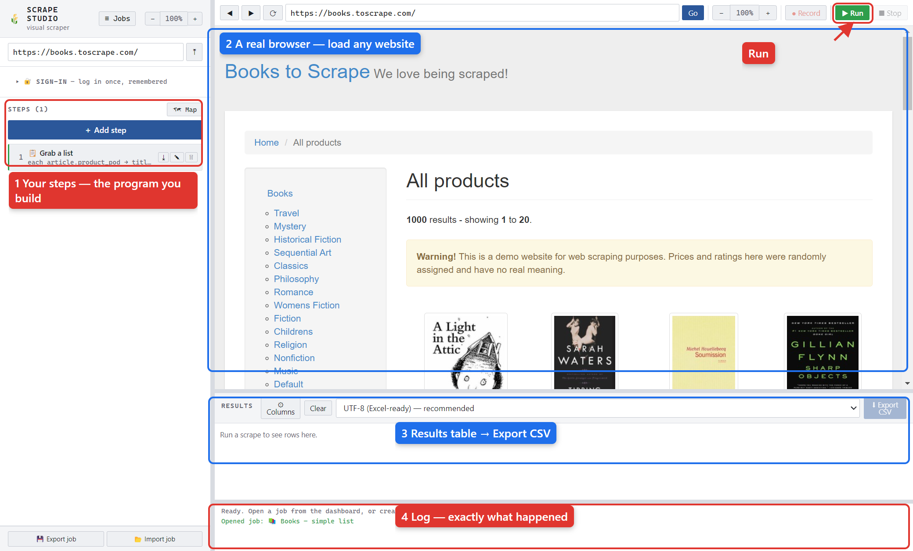
- Steps — your ordered list of actions. ＋ Add step opens a directory of everything you can do.
- Browser — type a URL and press Go, or let a run drive it. ▶ Run and ● Record live in the browser bar so they're always in reach.
- Results — the rows you've scraped. ⚙ Columns shapes them; ⬇ Export CSV saves.
- Log — a narrated trace of the run with the real values, so a filter that drops everything is never a silent mystery.
Your first scrape in 5 steps
We'll scrape a page of books into a CSV. It takes about a minute.
- Create a job. On the dashboard press + New scrape job, give it a name and a start URL (e.g.
https://books.toscrape.com/), and press Create.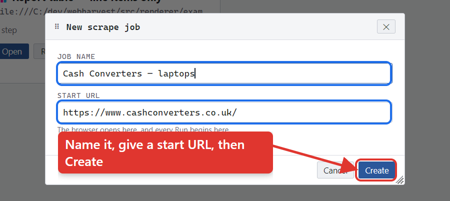
Name it, give the start URL, press Create. - Add a “Grab a list” step. Press ＋ Add step and choose Grab a list (for repeating items like product cards).
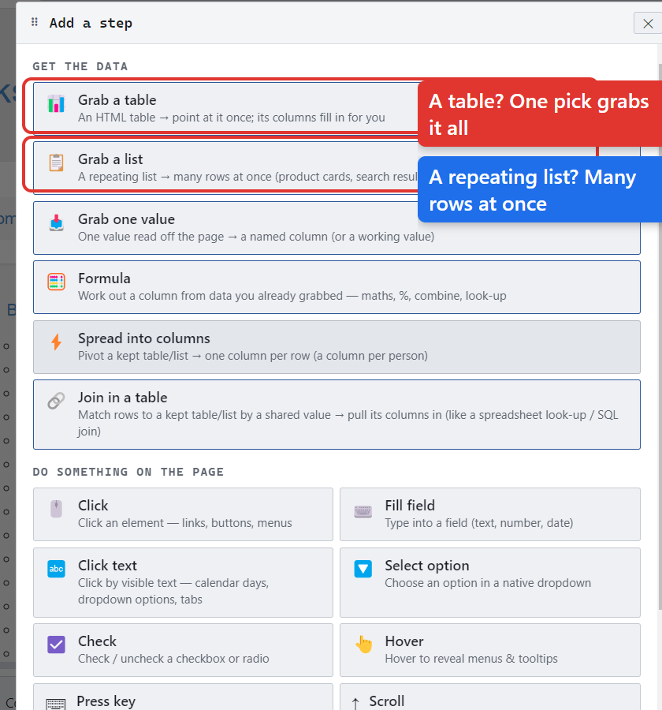
The step directory, grouped by what each step does. - Pick one row, then pick its columns. Press Pick and click one book card. Then + Add column and Pick the title, the price, the stock — inside the card.
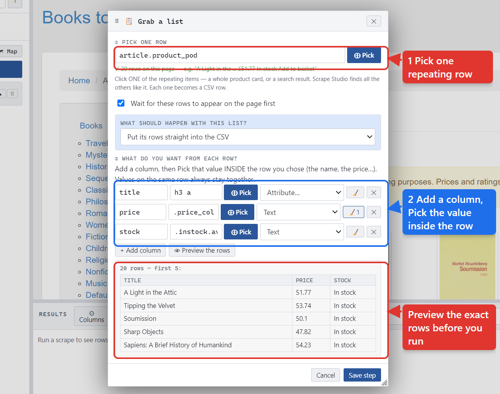
① Pick one repeating row. ② Add a column and pick each value inside it. - Run it. Press ▶ Run. Rows fill the results table and the log narrates what happened.
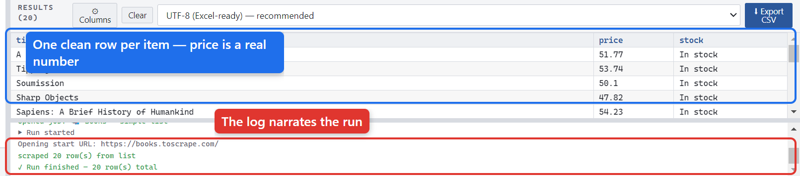
One clean row per item — and priceis a real number, ready for Excel. - Export. Optionally press ⚙ Columns to rename/reorder, then ⬇ Export CSV.
Tutorial: Scrape a list of items
example: “Books — simple list”
Product cards, search results, directory listings — anything that repeats — is a job for 📋 Grab a list. You pick one item and Scrape Studio generalizes it to match every sibling, then you pick the values you want from inside a row.
Because the column selectors are relative to the row, the title and price on the same card always stay together — you get one aligned row per item.
Tutorial: Grab a table in one pick
examples: “Report table — line items only / every row”
An HTML table is the one shape a click-picker can't handle well (click a row and it also matches the header). So 📊 Grab a table doesn't guess — you point at the table once (any cell) and it reads the table's own structure.
- ＋ Add step → 📊 Grab a table → Pick, then click any cell. Whole tables light up as you hover.
- It fills in every column from the headers, sets money/percent columns to come out as numbers, and leaves out Subtotal/Total rows (a tick-box keeps them).
- Shape the columns (rename / drop / reorder / text-vs-number) with a live preview, then Run.
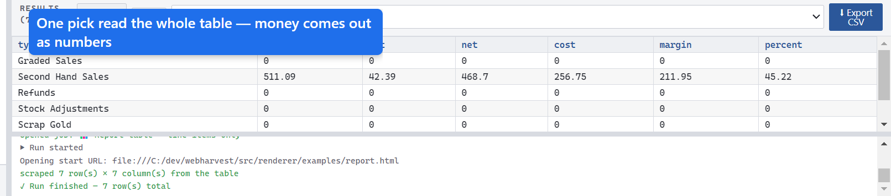
gross, vat, net… come out as real numbers.0. If blank should mean “no value” (not zero), set that column to Text.Tutorial: Keep only some items (filter)
example: “Books — only under £20”
To keep only items that match a rule, loop over them with 🔄 For each, grab the value to test, and use ❓ If … → ⏭ Skip item to drop the ones you don't want. One pass of the loop that isn't skipped commits one row — automatically.
For each article.product_pod (one pass per book = one row) Grab price = .price_color (Number) → a working value If price ≥ 20 → Skip item ← drops the pricey ones Grab title = h3 a (title) → a column the row commits itself: { title }
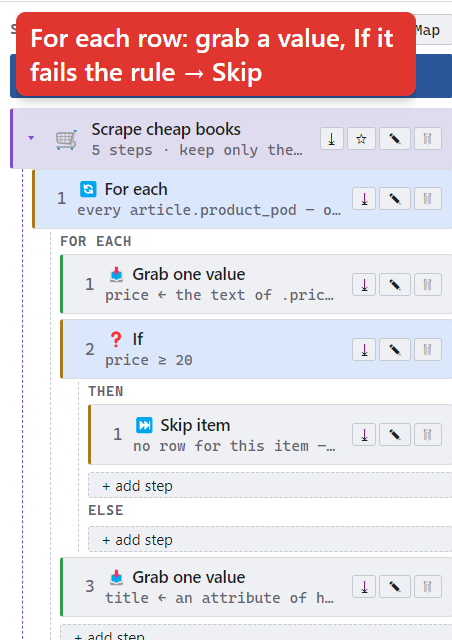
How values flow
price is produced by the Grab step and consumed by the If. You never
wire that by hand — the name is the wire. Keep price as a
working value (used by the rule, kept out of the CSV) and title as a
column (what you export). See it drawn in the Map:
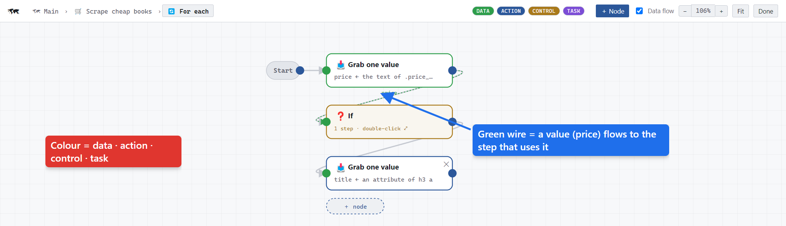
price wire runs from the Grab into the If.Tutorial: Scrape multiple pages
example: “Books — paginated”
There's no fixed “pagination” panel — you build a small loop that follows the
next link, which handles every kind of pager. The trick is a boolean value
(more) that drives a 🔁 While loop:
Grab more = does .next a exist? → working value (true/false) While more is true (safety cap: 5) Grab a list article.product_pod → title, price Click .next a (go to the next page) Grab more = does .next a exist? (refresh the flag)
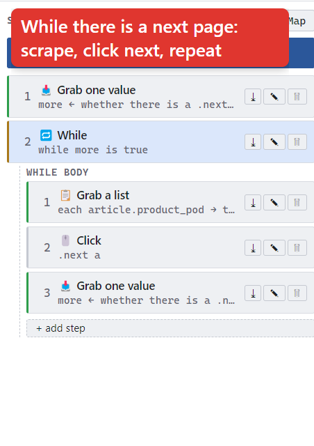
Each pass's rows accumulate. When the last page has no next link, more
becomes false and the loop stops. Raise the safety cap to scrape more pages.
Tutorial: Log in, then scrape
example: “Quotes — Log in, then scrape (Try/Recover)”
There are two ways to handle a site that needs a login:
- Log in by hand once (best for real sites, 2FA, banks). Open the job and just sign in in the browser — it's remembered. See Sign-in & 2FA.
- Log in as steps (for simple username/password forms) — a 📦 Task that goes to the login page, fills the fields, and clicks submit; then a second Task scrapes.
Wrap the scrape in 🛟 Try / Recover so a flaky page doesn't kill the whole run — if the Try steps fail, the recovery steps run instead (with optional retries).
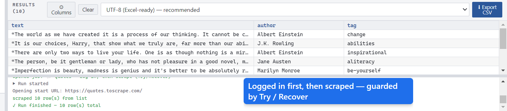
The element picker
Picking always happens inside a step: press a step's Pick button, the editor steps aside, and you point at the page. Hover to highlight, click to capture.
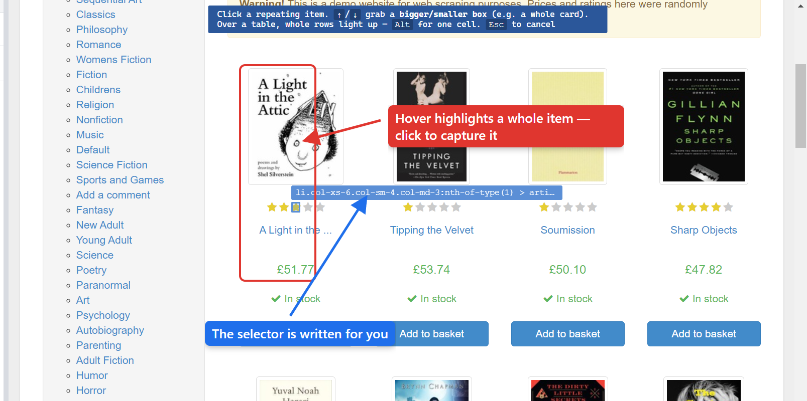
- ↑/↓ — grab a bigger/smaller box (e.g. the whole card vs. just the title).
- Over a table, whole rows light up — hold Alt for a single cell.
- Esc — cancel picking.
Columns & CSV export
Press ⚙ Columns to shape the CSV: tick/untick to include a column, rename its
heading, and reorder — drag the ⠿ handle to move a column anywhere, press
⤒ to jump it straight to the top (handy when a date column lands at the
end of hundreds of columns), or nudge with ↑/↓. Then Apply and
⬇ Export CSV.
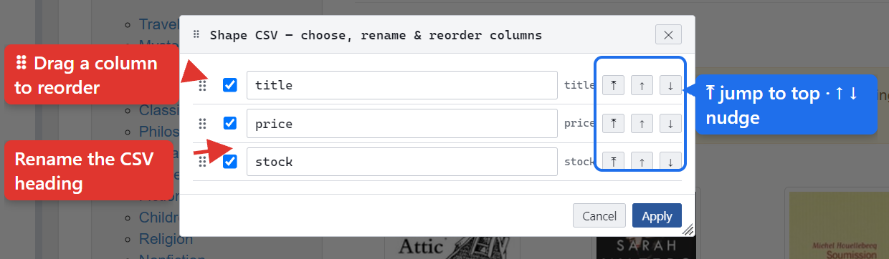
Choose the file encoding next to the Export button — UTF-8 (Excel-ready) is the safe default for opening cleanly in Excel (£, accents, etc.).
Cleaning up text (no regex)
Pages give you Price: £1,024.50 (inc VAT), not 1024.5. Every step that
reads the page has a Clean up the text list — clean-ups you pick from a dropdown
and apply in order:
| # | Clean-up | Result |
|---|---|---|
| 1 | Text between £ and ( | 1,024.50 |
| 2 | Number — strip £ $ , % | 1024.5 |
Press ▶ Test on the page to see “on the page: … → you get: 1024.5” before you run.
Available clean-ups include: tidy spaces, lower/upper, Number, first/last number, round,
digits only, text between / after / before, split-and-take, replace, add at start/end,
pad, default-if-empty, dates (→ 2026-07-14), and a raw regex for power users.
< / > comparisons in rules work correctly.The Map (flowchart)
Press 🗺 Map to see — and edit — your whole program as a Blueprint-style node graph. It's the same job as the step list, shown two ways.
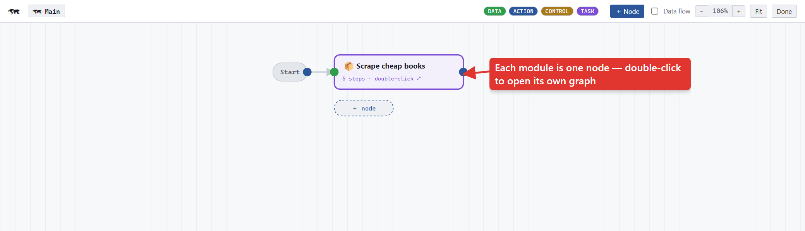
price flowing into the If.- Node colour = the kind of step: data · page action · control · module.
- Grey arrows = run order. Green links = data flow.
- Drag to move · double-click to edit (or drill into a module/loop) · drag a node's right dot ▸ to another's left dot to set the order · breadcrumbs climb back out.
Sign-in & staying logged in (incl. 2FA)
Each job has its own browser session, saved to disk — so a login (including 2FA) sticks across restarts and is reused on every run. Different jobs can be signed into different sites or accounts independently.
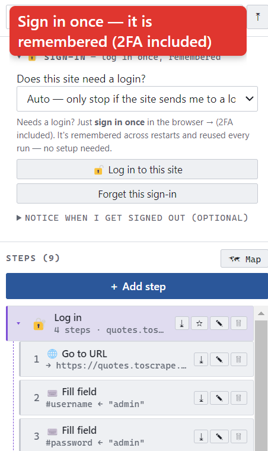
- 🔓 Log in to this site — opens the browser so you sign in normally (2FA included). Done once, remembered.
- Forget this sign-in — wipe the session (sign out / switch account).
- Notice when I get signed out (optional) — Pick something only shown when logged in (your account menu). Every run checks it first; if you've been signed out, the run pauses and asks you to log in again instead of scraping nothing.
Record mode
For custom widgets that don't map to a single step — bespoke dropdowns, JavaScript date pickers, multi-step controls — press ● Record, do the actions yourself in the page, then Stop. Scrape Studio translates what you did into its own editable steps.
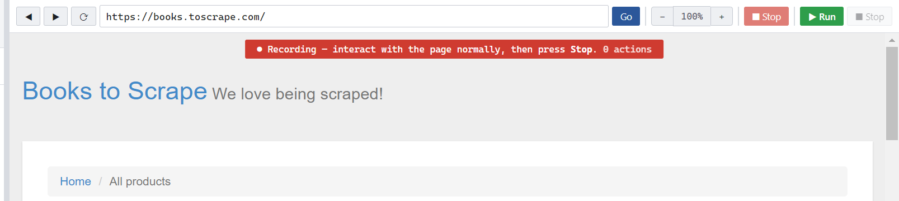
Typing becomes Fill field, a dropdown change becomes Select option, Enter/Tab/Esc become Press key, and the real pauses become Delay steps you can retune.
Updates
Scrape Studio updates itself from its releases. When you launch the app it checks for a newer version in the background; if one is found it downloads and offers to restart to update.
- Help → Check for Updates… — check on demand; the result is shown in a dialog.
- Help → Open Update Log — see exactly what the updater did (useful if an update doesn't arrive).
The example jobs
Six runnable examples ship with Scrape Studio and appear on your dashboard the first time you open it. Open any one, press ▶ Run, then open its 🗺 Map to study how it's built.
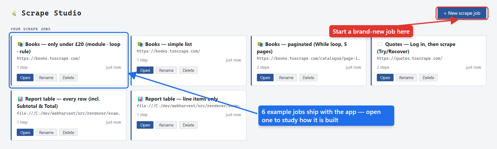
| Example | Teaches |
|---|---|
| 📊 Report table — line items only | Grabbing an HTML table in one pick; money as numbers |
| 📊 Report table — every row | The same table, keeping Subtotal & Total rows |
| 📚 Books — simple list | The one-step list scrape (the 90% case) |
| 📚 Books — only under £20 | Module · For-each · If · Skip · data flow |
| 💬 Quotes — Log in, then scrape | Two modules wired together, a login, and Try / Recover |
| 📚 Books — paginated | A While loop driven by a data value |
Every step, briefly
Get the data
| 📥 Grab one value | Read one thing off the page into a named column (or working value): text / attribute / href / count / exists / page URL / a calculation. |
| 📋 Grab a list | Pick one repeating row, then a column per value → many aligned rows at once. |
| 📊 Grab a table | Point at an HTML table once; every column is read from its headers. |
Do something on the page
| 🖱️ Click / 🔤 Click text | Click an element, or the element whose visible text matches (robust for tabs, calendar days). |
| 🔽 Select option | Drive a native dropdown by visible text / value / index. |
| ☑️ Check | Check / uncheck / toggle a checkbox or radio. |
| ⌨️ Fill field | Type into a text / number / date field (works on React/Vue controlled inputs); optional press-Enter. |
| 👆 Hover · ⌨ Press key | Reveal hover menus; send a real key event (Enter, Tab, arrows…). |
| ⏱️ Delay · 👁️ Wait for | Pause a fixed time, or wait until an element appears. |
| ↕️ Scroll · ⤓ Load all | Scroll to top / bottom / by N pixels, or keep scrolling until an infinite list stops growing. |
| 🌐 Go to URL · ⬅️ Go back | Navigate somewhere (supports {{variables}}), or return to the previous page. |
Repeat & decide
| ❓ If / Else | Run a block when a visual condition is true. |
| 🔄 For each | Run a block once per matching element; each pass makes a row. |
| 📅 For each date | Run a block once per date in a range — pick calendar dates, or a range of week numbers (e.g. week 1 → 43 visits every day in those weeks). The date is handed to each pass as {{date}}. |
| 🔁 While · 🔢 Repeat | Loop while a condition holds, or a fixed number of times (with an index variable). |
| ⏭ Skip item · ⛔ Break | Drop the current item (no row), or exit the loop entirely. |
Organize & protect
| 📦 Task (module) | Group steps into a named, collapsible folder; save to the library and reuse anywhere. |
| 🛟 Try / Recover | Run risky steps; if any fails, jump to recovery steps (with optional retries) instead of dying. |
Troubleshooting & FAQ
I ran it and got 0 rows.
Read the log — it says why (e.g. a rule dropped everything, or the list selector matched nothing). Open the Grab step and press Preview the rows / Test on the page to see live what it captures.
The site keeps sending me to a login page.
Open 🔐 Sign-in → Log in to this site and sign in once (2FA included). It's remembered. See Sign-in & 2FA.
My prices export as text like “£51.77”, not 51.77.
Add a Number clean-up to that column (see Cleaning up text).
A search box clears itself when I type.
Use Fill field (not a raw key send) — it writes through the native setter so modern React/Vue inputs keep the value, then Click the search button.
The values come out unaligned (all titles, then all prices).
Use one Grab-a-list with a column per value, not separate grabs. See Scrape a list.
A widget is inside an iframe and I can't pick it.
Cross-origin iframes aren't reachable yet in this version.